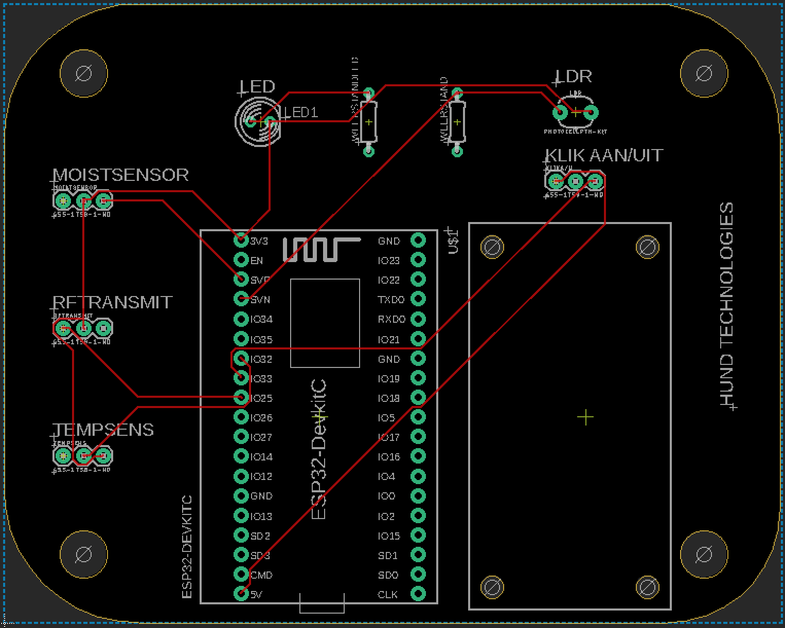

Week 5 & 6
In deze twee weken lieten we de software en het systeem even achter ons en zijn we aan de slag gegaan met het ontwerpen van een PCB (Printed Circuit Board). Hierop kunnen later de componenten van het Plant System geplaatst worden.
Week 5 : Printed Circuit Board practice
Deze week zijn we druk bezig met een ander activiteit, namelijk het ontwerpen van een Printed Circuit Board. Dit doe ik m.b.v. het programma Eagle. Bij het opstarten van dit programma leek het me allemaal erg ingewikkeld en lastig totdat ik hier eenmaal mee bezig was en de stappen van de module op Robotexchange.io keurig volgde. Deze stappen zijn door Matthijs erg goed opgezet en zullen mij volgende week helpen om het uiteindelijke PCB te ontwerpen. Ik ervoer het dan ook wel als een overwinning om het werkende te krijgen en kreeg er mede daardoor ook enorm veel plezier in.
Week 6 : Printed Circuit Board (Hund Technologies)
In deze les zijn Giel en ik samen de stappen voor het vormen van onze PCB’s doorgelopen, dit leidde er zeker niet toe dat we dezelfde PCB’s hebben gemaakt maar wel dat we elkaar op de juiste momenten konden helpen bij het vormen van de PCB’s. Ik vond het erg leuk om dit samen te doen en zo uiteindelijk een geschikte PCB in te kunnen leveren. Aan deze PCB heb ik nog een persoonlijke touch gegeven door er ‘Hund Technologies’ op te laten zetten. Ik kijk nu al uit naar het moment dat deze PCB’s geleverd worden vanuit China. Al met al weer iets waar ik meer heb gepresteerd dan ik zelf van tevoren had verwacht, dat geeft wel een zeer voldaan gevoel.
